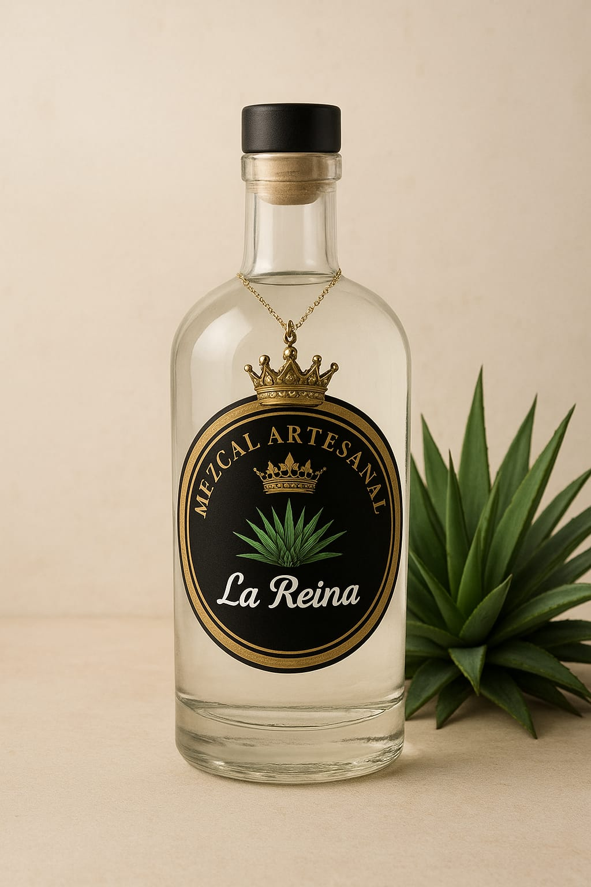

DESCRIPCION
El mezcal artesanal que por nombre lleva "La Reina"es una de tantas bebidas espirituosas, es un mezcal 100% artesanal elaborado con maguey previamente seleccionado con la mejor calidad y siguiendo pasos tradicionales que conservan la esencia, pureza de un mezcal. Su nombre refleja la elegancia, la fuerza y distinción de un producto que honra la herencia cultural de México. Cada botella de La Reina encierra un proceso artesanal único ; desde la cosecha manual del agave maduro, su cocción en hornos de piedra, la molienda con tahona y la fermentación natural en tinas de madera, hasta su destilación en alambiquede cobre. El resultado es un mezcal de aroma intenso, sabor ahumado y notas suaves que conquistan el paladar.
“La Reina” busca posicionarse como un símbolo de calidad, tradición y orgullo mexicano, ideal para quienes disfrutan de experiencias auténticas y desean compartir y disfrutar un increíble pedazo de nuestra cultura en cada sorbo.
DECALOGO DE VALORES DEL NEGOCIO:● Autenticidad: Honramos la esencia del mezcal artesanal, manteniendo procesos tradicionales que reflejan el verdadero espíritu de México.
● Calidad: Cada botella es el resultado de una cuidadosa selección de magueyes y una elaboración meticulosa que garantiza un sabor excepcional.
● Tradición: Conservamos las técnicas ancestrales que han dado vida al mezcal por generaciones, respetando el legado de nuestros maestros mezcaleros.
● Respeto: Valoramos el trabajo humano detrás de cada botella, reconociendo el esfuerzo de quienes hacen posible esta bebida ancestral.
● Compromiso: Nos esforzamos por brindar siempre un producto honesto, transparente y fiel a nuestras raíces.
● Sostenibilidad: Protegemos la tierra que nos da el maguey, fomentando prácticas responsables y un equilibrio con la naturaleza.
SECTORES PRODUCTIVOS:
MUNICIPIO:El municipio de Petatlán, ubicado en la región Costa Grande del estado de Guerrero, cuenta con una economía predominantemente rural, donde el sector primario tiene un papel fundamental. Las principales actividades productivas incluyen la agricultura, con cultivos como maíz, frijol y maguey, así como la ganadería y la apicultura. Dentro de este entorno, ha cobrado fuerza el desarrollo de proyectos en el sector secundario, especialmente aquellos relacionados con la transformación de productos agrícolas en bienes de mayor valor agregado. En este contexto se enmarca la actividad de La Reina, una empresa local dedicada a la producción artesanal de mezcal, que utiliza técnicas tradicionales y materia prima cultivada en la región. El sector terciario también está presente, aunque en menor medida, destacando el comercio local, algunos servicios básicos y un creciente interés por el turismo religioso y cultural, como el que atrae el Santuario del Padre Jesús.
REGION:La región de la Costa Grande de Guerrero, que abarca municipios como Petatlán, Zihuatanejo, Tecpan y Atoyac, presenta una economía variada, con fuerte presencia de los tres sectores productivos. El sector primario es dominante, con actividades agrícolas como el cultivo de coco, mango, maíz, café y maguey, además de la pesca en las zonas costeras. El maguey, en particular, ha cobrado importancia en comunidades rurales donde se promueve su uso para la producción de mezcal. El sector secundario ha comenzado a desarrollarse a través de pequeñas y medianas empresas familiares dedicadas a la transformación de productos locales. En este ámbito, La Reina representa un ejemplo de emprendimiento artesanal que impulsa la producción de mezcal tradicional, contribuyendo a la economía regional, generando empleo y fortaleciendo la identidad cultural de Guerrero. El sector terciario, impulsado en gran medida por el turismo (principalmente en destinos como Ixtapa-Zihuatanejo), comienza a extenderse hacia el turismo rural y gastronómico. Esto abre nuevas oportunidades para empresas como La Reina, que pueden vincularse con experiencias turísticas enfocadas en la cultura del mezcal, la producción artesanal y las tradiciones locales.
REFERENCIA AL SECTOR PRODUCTIVO INTERNACIONAL DE PRODUCTO
El mezcal artesanal ha trascendido el mercado nacional y se ha posicionado con fuerza en el sector productivo internacional, especialmente dentro de la industria de bebidas espirituosas premium. En los últimos años, la demanda global de productos auténticos, naturales y con identidad cultural ha impulsado el crecimiento de las exportaciones mexicanas de mezcal hacia países como Estados Unidos, España, Francia, Reino Unido, Canadá y Japón. Este posicionamiento se debe a su proceso artesanal de elaboración, que lo diferencia de otros destilados industriales y le otorga un valor agregado en los mercados internacionales. Además, la Denominación de Origen Mezcal (DOM) garantiza su autenticidad y calidad, convirtiéndolo en un producto competitivo dentro del comercio global. El sector productivo del mezcal artesanal forma parte del sector secundario y terciario de la economía, ya que combina la transformación agrícola del agave (producción y destilación) con actividades comerciales, turísticas y de exportación. Esto genera empleos, impulsa la economía regional y promueve la cultura mexicana en el extranjero. En el ámbito internacional, el mezcal artesanal compite con destilados como el whisky, el ron o el vodka, pero destaca por su origen cultural, métodos sostenibles y sabor único, factores que fortalecen su ventaja competitiva y su creciente presencia en el mercado global.
DATOS Y CIFRAS RELEVANTES
● En 2015, México exportó unas 1.9 millones de litros de mezcal (junto con el segmento artesanal) con valor estimado de US $16.7 millones.
● En 2016, las exportaciones de mezcal “Hecho en México” alcanzaron unos 2.7 millones de litros, lo que representó un crecimiento de 30.6% sobre el año previo, y su valor llegó a US $26.8 millones. 
● Para 2021, de acuerdo al Consejo Mexicano Regulador de la Calidad del Mezcal (COMERCAM), se produjeron 8 millones de litros de mezcal, de los cuales 5.1 millones fueron exportados. 
● Para 2023, se reportó que la producción cayó 13.6% respecto al año anterior y las exportaciones bajaron 8.35%. 
● Una fuente señala que en 2023 unas 7.8 millones de litros de mezcal fueron exportados a 86 países.